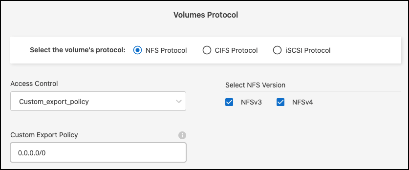
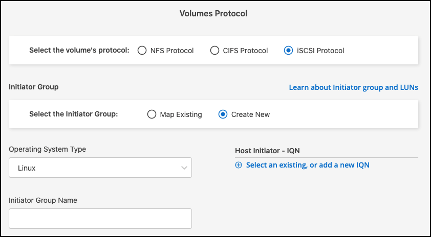
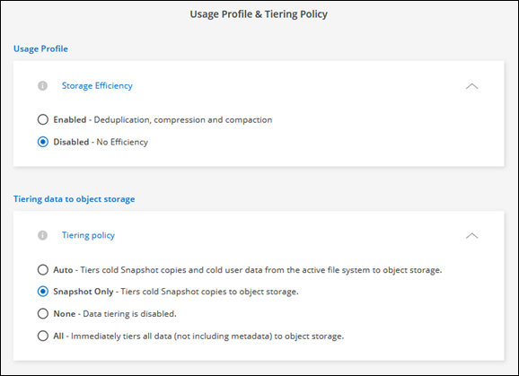
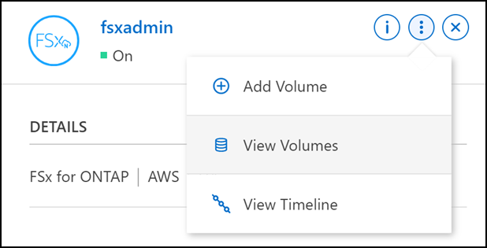

Manos a la obra
Manos a la obra
Crear volúmenes para FSx para ONTAP
 Sugerir cambios
Sugerir cambios
Después de configurar el entorno de trabajo, puede crear y montar FSX para los volúmenes de ONTAP.
Cree volúmenes
Puede crear y gestionar volúmenes NFS, CIFS e iSCSI desde su entorno de trabajo FSX para ONTAP en BlueXP. Los volúmenes creados con la CLI de ONTAP también serán visibles en el entorno de trabajo FSX para ONTAP.
Puede añadir volúmenes abriendo el entorno de trabajo y seleccionando la ficha volúmenes o simplemente utilizando el panel entorno de trabajo Detalles del lienzo. En esta tarea se describe cómo agregar volúmenes mediante el panel Detalles.
-
Necesita un activo "Conector en AWS".
-
Si desea utilizar SMB, debe haber configurado DNS y Active Directory. Para obtener más información sobre la configuración de red DNS y Active Directory, consulte "AWS: Requisitos previos para usar un Microsoft AD autogestionado".
-
Seleccione el entorno de trabajo FSX para ONTAP en el lienzo. Si no tiene un conector activado, se le pedirá que agregue uno.
-
En el panel Detalles, utilice los tres puntos () para abrir el menú de opciones. Haga clic en Añadir volumen.

-
Detalles de volumen, protección y etiquetas
-
Escriba un nombre para el volumen nuevo.
-
El campo Storage VM (SVM) rellena automáticamente la SVM en función del nombre del entorno de trabajo.
-
Introduzca el tamaño del volumen y seleccione una unidad (GIB o TIB). Tenga en cuenta que el tamaño del volumen crecerá con el uso.
-
Seleccione una política de Snapshot. De forma predeterminada, se realiza una copia de Snapshot cada hora (manteniendo las últimas seis copias), cada día (manteniendo las dos últimas copias) y cada semana (manteniendo las dos últimas copias).
-
Opcionalmente, cree etiquetas para categorizar los volúmenes haciendo clic en el signo más e introduciendo un nombre y un valor de etiqueta.
-
De manera opcional, seleccione la opción optimización para crear una FlexGroup y distribuir datos de volúmenes en el clúster.

La distribución de FlexGroup solo está disponible para los protocolos de volúmenes NFS y CIFS.
-
-
Protocolo de volúmenes:
-
Seleccione un protocolo de volumen NFS, CIFS o iSCSI.
NFS-
Seleccione una política de control de acceso.
-
Seleccione las versiones de NFS.
-
Seleccione una política de exportación personalizada. Haga clic en el icono de información para conocer criterios de valor válidos.

CIFS-
Introduzca un nombre para compartir.
-
Introduzca usuarios o grupos separados por punto y coma.
-
Seleccione el nivel de permiso del volumen.

-
Si este es el primer volumen CIFS de este entorno de trabajo, se le pedirá que configure la conectividad CIFS mediante una configuración Active Directory o Workgroup.
-
Si selecciona una configuración de grupo de trabajo, introduzca el servidor y el nombre del grupo de trabajo para un grupo de trabajo configurado para CIFS.
-
Si selecciona una configuración de Active Directory, tendrá que proporcionar la siguiente información de configuración.
Campo Descripción Dirección IP primaria DNS
Las direcciones IP de los servidores DNS que proporcionan resolución de nombres para el servidor CIFS. El servidor DNS indicado debe contener los registros de ubicación de servicio (SRV) necesarios para localizar los servidores LDAP de Active Directory y los controladores de dominio del dominio al que se unirá el servidor CIFS.
Dominio de Active Directory al que unirse
El FQDN del dominio de Active Directory (AD) al que desea que se una el servidor CIFS.
Credenciales autorizadas para unirse al dominio
Nombre y contraseña de una cuenta de Windows con privilegios suficientes para agregar equipos a la unidad organizativa (OU) especificada dentro del dominio AD.
Nombre NetBIOS del servidor CIFS
Nombre de servidor CIFS que es único en el dominio de AD.
Unidad organizacional
La unidad organizativa del dominio AD para asociarla con el servidor CIFS. El valor predeterminado es CN=Computers.
Dominio DNS
El dominio DNS de la máquina virtual de almacenamiento (SVM). En la mayoría de los casos, el dominio es el mismo que el dominio de AD.
Servidor NTP
Seleccione Activar la configuración del servidor NTP para configurar un servidor NTP mediante el DNS de Active Directory. Si necesita configurar un servidor NTP con una dirección diferente, debe usar la API. Consulte "Documentos de automatización de BlueXP" para obtener más detalles.
-
ISCSIPuede conectar su LUN mediante un iGroup existente o crear uno nuevo. Para asignar un iGroup existente, seleccione su sistema operativo y uno o más iGroups.
Para crear un nuevo iGroup:
-
Seleccione Crear nuevo.
-
Seleccione el sistema operativo.
-
Haga clic en para añadir uno o varios nombres completos de iSCSI (IQN) del host. Puede seleccionar IQN existentes o agregar nuevos IQN. Para obtener más detalles sobre cómo encontrar el IQN de un volumen, consulte "Conectar un host a un LUN".
-
Introduzca un Nombre de iGroup.

-
-
-
Perfil de uso y clasificación por niveles
-
De forma predeterminada, la eficiencia del almacenamiento está desactivada. Puede cambiar esta configuración para habilitar la deduplicación y la compresión.
-
De forma predeterminada, la directiva de segmentación se establece en sólo instantánea. Puede seleccionar una política de organización en niveles diferente en función de sus necesidades.

-
Si seleccionó Optimization (FlexGroup), debe especificar el número de componentes a los que se deben distribuir los datos de volúmenes en. Se recomienda encarecidamente utilizar un número par de componentes para garantizar una distribución uniforme de los datos.
-
-
Revisión: Revise su configuración de volumen. Haga clic en anterior para cambiar la configuración o en Agregar para crear el volumen.
El nuevo volumen se agrega al entorno de trabajo.
Monte los volúmenes
Acceda a las instrucciones de montaje desde BlueXP para que pueda montar el volumen en un host.
Puede montar volúmenes abriendo el entorno de trabajo y seleccionando la ficha volúmenes o simplemente utilizando el panel entorno de trabajo Detalles del lienzo. En esta tarea se describe cómo agregar volúmenes mediante el panel Detalles.
-
Seleccione el entorno de trabajo FSX para ONTAP en el lienzo.
-
En el panel Detalles, utilice el icono de tres puntos () para abrir el menú de opciones. Haga clic en Ver volúmenes.

-
Utilice Administrar volúmenes para abrir el menú acciones de volumen. Haga clic en comando de montaje y siga las instrucciones para montar el volumen.

El volumen ahora está montado en el host.